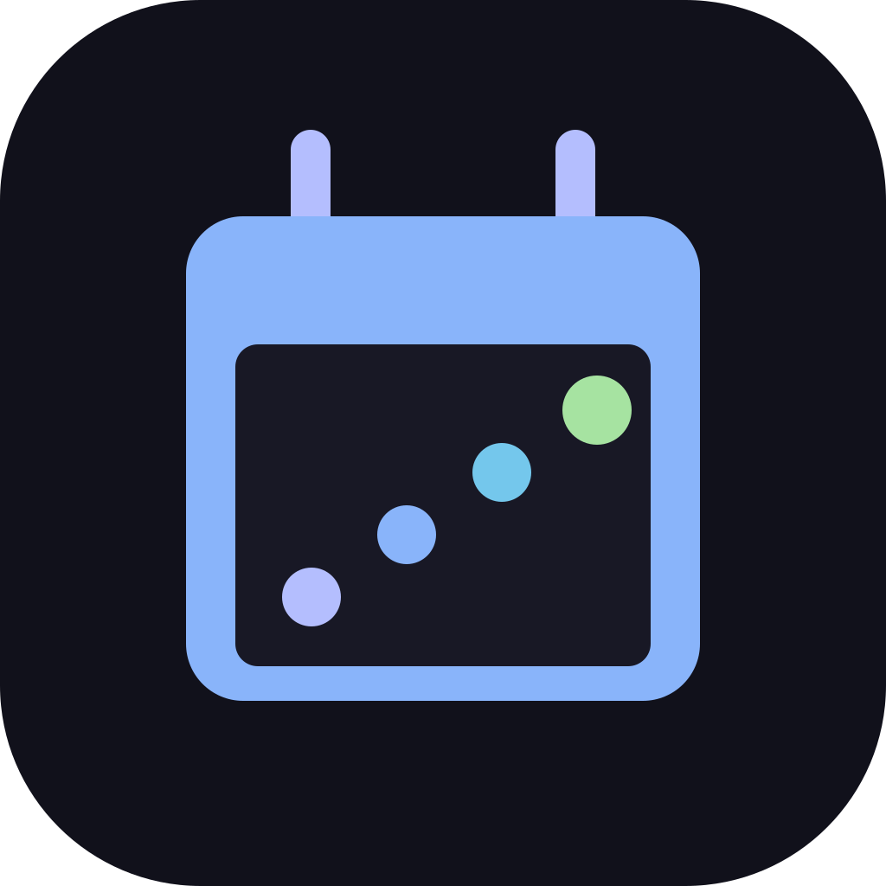
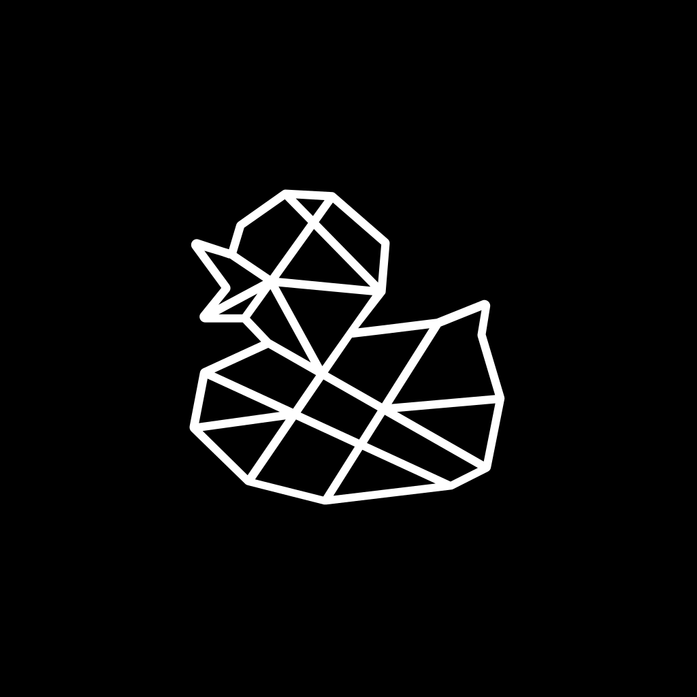

What grows here
Apps rooted in the same ground.
Each one is just multi-writer state over Loam — no backend of its own, offline by default, yours on your devices.
Kym
Know Your Money — local-first, zero-based budgeting a household shares. No bank login, no server.
budget · household
Scala
Secure CALendar — a shared calendar rebuilt on Logos; devices converge offline, each calendar signed by your own key (Keycard optional).
calendar · has a site ↗
Qaku
Live Q&A for a room — ask, upvote, answer — even on a saturated conference network.
q&a · eventsPerun
Privacy-first run tracker — background capture plus analytics, syncing your routes over Loam.
tracker · gps